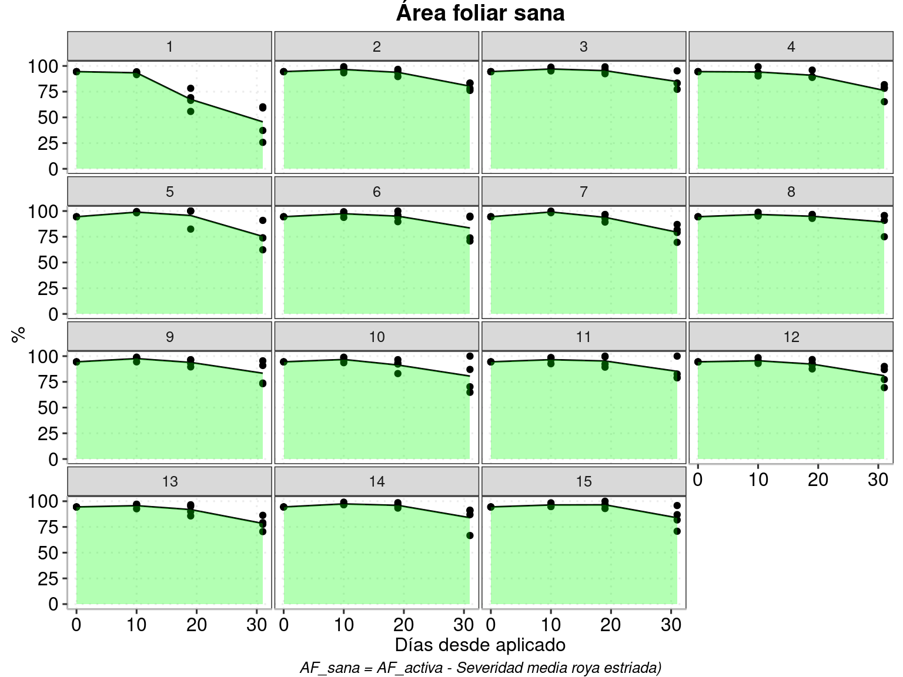
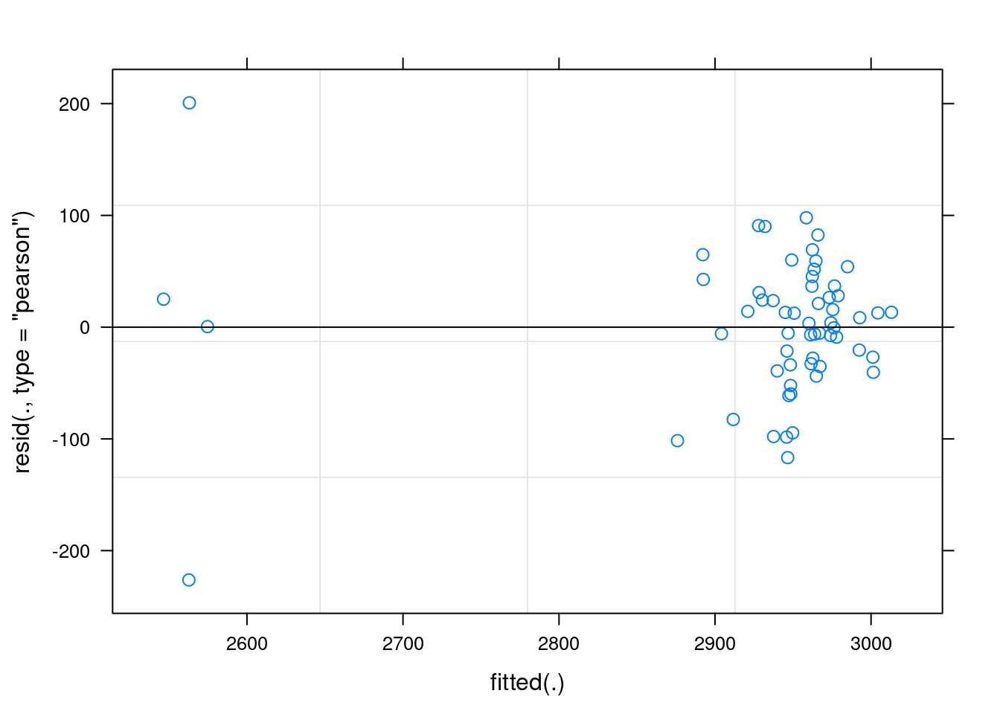

2 Control
pacman::p_load(tidyverse)
load("data/nova_trigo.Rdata")
source(here::here('theme_juan.R'))
# assum_lm <- "https://github.com/juanchiem/R-sources-Juan/blob/master/lm_assumptions.R?raw=TRUE"
# devtools::source_url(assum_lm)2.1 Area foliar
\(Verdor - severidad~media~enf_{(i)}\)
- Area foliar activa y severidad
dat %>%
dplyr::select(-matches("e1")) %>%
pivot_longer(
cols = c("verdor", "int_e2"),
names_to = "var",
values_to = "val") %>%
mutate(var = factor(var),
var = fct_relevel(var, "verdor")) %>%
ggplot()+
aes(x=dias, y=val, col = var)+
facet_wrap("trt")+
stat_summary(fun = "mean", geom="crossbar",
size = 0.1, width = 0.5)+
geom_point(alpha=0.3) +
stat_summary(fun=mean, geom="line", size=0.7,
aes(col=var, group=var)) +
scale_color_manual(labels = c(
"AF activa", "Sev media RE(%)"),
values = c("green3", "red3")) +
theme_juan(12, "top")+
labs(title = "Evolución área foliar",
y = "%", x = "Días desde aplicado",
col = "",
caption =
"AF activa = Proporción de hojas con >50% de verdor\nSeveridad media (considera los 0%)")
# ggsave(last_plot(), file = "plots/evol_AF.png", w=6.5, h=7)
# drive_upload(path = as_dribble("fina_2020/NOVA"), "nova/nova_trigo/evol_AF_tr.png", overwrite = TRUE)- Area foliar Sana
\(Area foliar activa - severidad media de las enfermedades presentes\)
Es una represntación indirecta del área fotisintéticamente activa
dat %>%
ggplot()+
aes(x=dias, y=af_sana)+
geom_point()+
stat_summary(fun ="mean", geom="line")+
stat_summary(fun = "mean", geom = "area",
fill = "green",
alpha = .3) +
facet_wrap("trt")+
labs(title = "Área foliar sana",
col = "Bloque",
y = "%", x = "Días desde aplicado",
caption =
"AF_sana = AF_activa - Severidad media roya estriada)")+
theme_juan(12, "top")# ggsave(last_plot(), file = "plots/AF_sana.png", w=7, h=6)
# drive_upload(path = as_dribble("fina_2020/NOVA"), "nova/nova_trigo/AF.png", overwrite = TRUE)# Cuando hubiera mas de una enfermedad, probablemente esto ayudaria
# dat_long <- dat %>%
# select(trt, rep, dias, matches("e2"), -contains("ABC"))%>%
# pivot_longer(
# cols = matches("e2"),
# names_to = "var",
# values_to = "val") %>%
# separate(var, c('metric', 'enf'), sep = '_', convert = TRUE) %>%
# mutate(enf_lab = factor(case_when(
# enf == "e1"~ "Mancha amarilla",
# enf == "e2"~ "Roya estriada"))) 2.2 Enfermedades
2.2.1 E2
- Incidencia e2
dat %>%
ggplot()+
aes(x=dias, y=inc_e2)+
geom_point()+
stat_summary(fun ="mean", geom="line")+
stat_summary(fun = "mean", geom = "area",
fill = "#EB5286",
alpha = .5) +
facet_wrap("trt")+
labs(title = "Incidencia roya estriada",
# col = "",
y = "%", x = "Días desde aplicado")+
theme_juan(12, "top")
# ggsave(last_plot(), file = "plots/incidencia_RE.png", w=7, h=6)
# drive_upload(path = as_dribble("fina_2020/NOVA"), "nova/nova_trigo/incidencia_RE.png", overwrite = TRUE)- Severidad media e2
dat %>%
ggplot()+
aes(x=dias, y=int_e2
# col=enf_lab
)+
geom_point()+
stat_summary(fun ="mean", geom= "line")+
stat_summary(fun = "mean", geom = "area",
fill = "#EB5286",
alpha = .5) +
facet_wrap("trt")+
labs(title = "Severidad media roya estriada",
y = "%", x = "Días desde aplicado")+
theme_juan(12, "top")
2.3 ABC de las métricas evaluadas
abc_dat <- dat %>%
group_by(trt, rep, .drop=FALSE) %>%
summarise(across(c("verdor", "int_e2", "af_sana"), ~MESS::auc(dias,.x, type = "linear"))) %>%
mutate_at(vars(trt, rep), as.factor)
# abc_dat %>%
# purrr::modify_if(., ~is.numeric(.), ~round(., 1)) %>%
# write_sheet(ss=nova_tr, sheet = "ABC")- ABC de AF sana - modelo
m0 = lmer(af_sana ~ trt + (1|rep), data = abc_dat)
plot(m0)
car::Anova(m0)
summary(m0)
pred_e0 = emmeans(m0, ~ trt, type = "response")
res_e0 <- cld(pred_e0,
Letters = letters, alpha = .05,
type = "response",
reversed = T)plot(res_e0, alpha =0.5) +
geom_vline(xintercept = res_e0 %>%
filter(trt==1) %>%
pull(emmean),
linetype = 2, col ="gray50")+
coord_flip()+
geom_point(data = abc_dat, aes(x = af_sana,
y = trt), pch=21,
position=position_dodge(width=1), size = 2) +
geom_text(data = res_e0, angle=90, vjust=-0.7,
aes(x = emmean,
y = trt,
label = .group),
size = 4)+
labs(x="ABC AF sana",
y = "Tratamiento")+
theme_juan(9, "bottom")+
scale_x_continuous(breaks=scales::pretty_breaks())
# ggsave("plots/abc_AFsana_model.jpg", width = 15, height = 10, units = "cm", last_plot(), dpi = 600)
#
# drive_upload(path = as_dribble("fina_2020/NOVA"), "nova_trigo/abc_AFsana_model.jpg", overwrite = TRUE)res_e0 %>%
mutate(
'IC_95%'=paste0(round(lower.CL,0),";",
round(upper.CL,0)),
dif=(emmean-filter(res_e0,trt==1)%>%pull(emmean)),
`dif_%`=(emmean/filter(res_e0,trt==1)%>%pull(emmean)-1)*100) %>%
dplyr::select(Trat=trt,
AF_sana= emmean,
`Tukey_5%` = .group,
dif,`dif_%`, 'IC_95%') %>%
purrr::modify_if(., ~is.numeric(.), ~round(., 1)) %>%
arrange(Trat) #%>%
# sheet_write(ss = nova_tr, sheet = "anova_AFsana")- ABC de severidad media de e2 - modelo
m1 = lmer(int_e2 ~ trt + (1|rep), data = abc_dat)
plot(m1); car::Anova(m1); summary(m1)
emmeans(m1, ~ trt, type = "response") %>%
multcomp::cld(., Letters = letters, alpha = .05,
type = "response", reversed = F) ->res1 plot(res1, alpha =0.5) +
geom_vline(xintercept = res1 %>%
filter(trt==1) %>%
pull(emmean),
linetype = 2, col ="gray50")+
coord_flip()+
geom_point(data = abc_dat, aes(x = int_e2, y = trt), pch=21,
position=position_dodge(width=1), size = 2) +
geom_text(data = res1, angle=90, vjust=-0.7,
aes(x = emmean,
y = trt,
label = .group),
size = 4)+
labs(x="ABC roya estriada",
y = "Tratamiento")+
theme_juan(9, "bottom")+
scale_x_continuous(breaks=scales::pretty_breaks())
# ggsave("plots/abc_RE_model.jpg", width = 15, height = 10, units = "cm", last_plot(), dpi = 600)
#
# drive_upload(path = as_dribble("fina_2020/NOVA"), "plots/abc_RE_model.jpg", overwrite = TRUE)res1 %>%
mutate(
# 'IC_95%'=paste0(round(lower.CL,0),";",round(upper.CL,0)),
# dif = (emmean-filter(res1, trt==1)%>%pull(emmean)),
`control(%)`=(emmean/filter(res1, trt==1)%>% pull(emmean)-1)*100) %>%
dplyr::select(Trat=trt, ABC_Sev= emmean,
`Tukey_5%` = .group,
`control(%)`) %>%
purrr::modify_if(., ~is.numeric(.), ~round(., 1)) %>%
arrange(Trat) #%>%
# sheet_write(ss = nova_tr, sheet = "anova_RE")